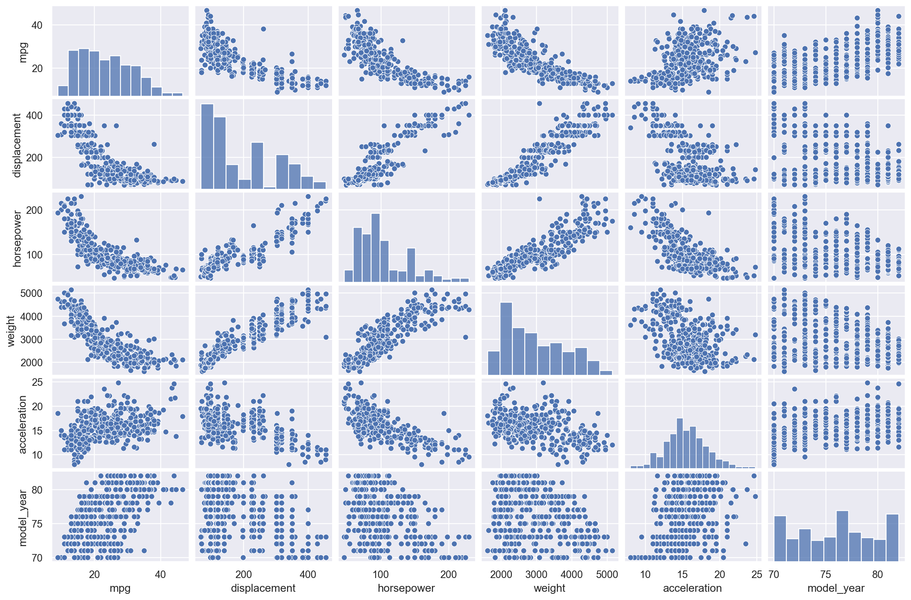
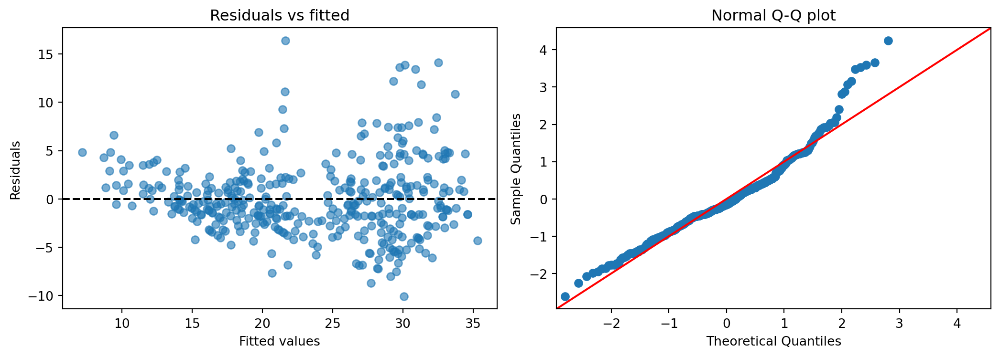
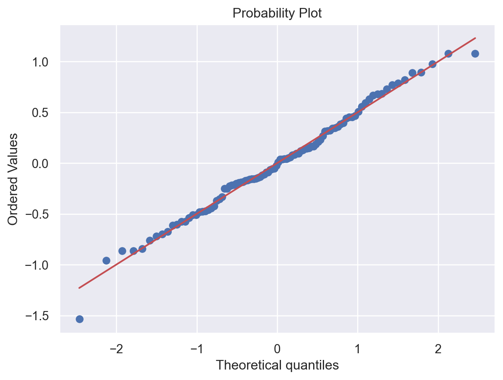

This section offers a brief review of linear regression, with the main emphasis on its Python implementation through examples.
2.1 Quick Overview
Linear regression is the fundamental supervised learning method for a quantitative response. It models the conditional mean of the response as a linear function of the predictors: \[
y = \beta_0 + \beta_1 x_1 + \cdots + \beta_p x_p + \varepsilon.
\]
In matrix notation, this can be written as \[
\vb y = \vb X\beta + \varepsilon.
\] Here, \(\vb X\) is the design matrix, whose first column is a column of ones representing the intercept.
2.2 The Ordinary Least Squares Estimator
The most common fitting method is ordinary least squares (OLS). It chooses the coefficient vector \(\beta\) that minimizes the residual sum of squares:
Interpretation is one of the main strengths of linear regression.
The coefficient \(\beta_j\) represents the change in the mean response associated with a one-unit increase in \(x_j\), holding the other predictors fixed.
When interactions are present, a main effect should not be interpreted in isolation. Its meaning depends on the values of the interacting variables.
If the predictors are centered so that a value of 0 corresponds to the average of the original variable, then the main-effect coefficient can be interpreted as the change in the mean response associated with a one-unit increase in \(x_j\), while holding the other predictors at their average levels.
A confidence interval gives a range of plausible values for a coefficient or for the mean response at a given combination of predictors.
A prediction interval is wider than a confidence interval because it must account for both uncertainty in the estimated mean response, and random variation in a future observation.
2.3 Assessing Model Fit
The classical assumptions of a linear regression model are:
The random errors are independent.
The errors follow a normal distribution.
The mean of the error distribution is \(0\).
The variance of the error distribution is constant across observations.
Several tools are commonly used to assess a linear regression fit. These diagnostics do not prove that a model is correct, but they help identify potential problems.
residual plots and partial residual plots,
Q-Q plots,
leverage and influence diagnostics,
summary measures such as \(R^2\), adjusted \(R^2\), and the residual standard error.
2.4 Formula language
The formula language was developed based on the Wilkinson-Rogers notations introduced in [1], and was later implemented in the S language at Bell Labs by John Chambers and colleagues in the 1980s [2]. It has since become the standard way to specify linear models in statistical software such as R and Python (statsmodels).
The following table summarizes the basic syntax and provides examples. Note that it differs slightly from the R version because Python and R use different syntax.
Formula
Meaning
y ~ x
Response \(y\) regressed on predictor \(x\)
y ~ x1 + x2
Include predictors \(x_1\) and \(x_2\)
y ~ .
Include all available predictors in the dataset
y ~ x1:x2
Interaction between \(x_1\) and \(x_2\) only
y ~ x1 * x2
Main effects and interaction (x1 + x2 + x1:x2)
y ~ x1 + x2 + x3 - x2
Include all listed variables except x2
y ~ (x1 + x2 + x3)^2
All main effects and two-way interactions
y ~ I(x**2)
Include a mathematical transformation of \(x\)
y ~ C(group)
Treat group as a categorical variable
y ~ np.log(x)
Include the transformation \(\log(x)\) using a Python function
y ~ 1
Model with intercept only
y ~ x - 1
Remove the intercept
NoteCategorical Predictors
Categorical predictors are represented through indicator (dummy) variables. If a factor has \(k\) levels, the model usually includes \(k-1\) dummy variables.
In Python when using statsmodels to fit linear regression models, categorical variables are automatically converted into dummy variables. To indicate that a variable is categorical, you may either:
explicitly convert the variable in the dataset to a categorical type using .astype("category"), or
use the C() function in the formula language.
2.5 Model Selection
In traditional multiple regression, several competing sets of predictors may be plausible. Model selection compares these models using criteria that balance goodness of fit with model complexity.
2.5.1 Some Criteria
These criteria reward good fit but penalize model complexity.
AIC tends to prefer somewhat larger models.
BIC penalizes complexity more strongly and often prefers smaller models.
Mallows’ \(C_p\) compares a candidate model to a larger reference model.
PRESS uses leave-one-out data to measure test performance.
The first three methods use training results to estimate test performance, whereas PRESS directly approximates the test error through leave-one-out validation. These tools are useful for comparing models, but they should not replace subject-matter reasoning.
2.5.2 Traditional variable selection methods
Best Subset Selection: Best subset selection compares all models of a given size and then chooses the best one according to a criterion such as AIC, BIC, adjusted \(R^2\), \(C_p\), or PRESS. It is conceptually simple, but it becomes computationally expensive when the number of predictors is large.
Stepwise Selection: Stepwise procedures add or remove variables sequentially rather than searching all possible models. These methods are faster than best subset selection, but they are greedy procedures and do not guarantee the globally best model.
2.6 Python Code
The main library for linear regression is statsmodels. We will also use pandas to deal with dataset and seaborn to deal with data visualization.
2.6.1 Setup
As an example we use the public mpg dataset from seaborn to demonstrate the workflow of the standard linear regression.
This is a dataset for cars manufactured between 1970-82 in USA, Europe., and Japan. It was taken from the StatLib library which is maintained at Carnegie Mellon University. The dataset was used in the 1983 American Statistical Association Exposition. More info can be found here.
import seaborn as snssns.set_theme()mpg = sns.load_dataset("mpg")mpg.head()
1
We use the sns theme to obtain cleaner and more visually appealing plots compared to the default matplotlib style.
This table shows that horsepower contains some missing values. We would like to drop them.
mpg = mpg.dropna()
The goal is to predict mpg using the other features of the car. We remove name because it does not provide meaningful information about vehicle performance. We also treat cylinders and origin as categorical variables.
For model_year, it could reasonably be treated as either a numerical or a categorical variable. For simplicity, we treat it as numerical here, since it has 13 unique values and using 13 categories would make the model less parsimonious.
Like mentioned before, we could also indicate categorical variables in the formula using C().
Now we could see the summary of the cleaned dataset. The default describe() will only show the distribution of numerical values. If we want to see categorical variables, we need to add the argument `include=“category”’.
mpg.describe()
mpg
displacement
horsepower
weight
acceleration
model_year
count
392.000000
392.000000
392.000000
392.000000
392.000000
392.000000
mean
23.445918
194.411990
104.469388
2977.584184
15.541327
75.979592
std
7.805007
104.644004
38.491160
849.402560
2.758864
3.683737
min
9.000000
68.000000
46.000000
1613.000000
8.000000
70.000000
25%
17.000000
105.000000
75.000000
2225.250000
13.775000
73.000000
50%
22.750000
151.000000
93.500000
2803.500000
15.500000
76.000000
75%
29.000000
275.750000
126.000000
3614.750000
17.025000
79.000000
max
46.600000
455.000000
230.000000
5140.000000
24.800000
82.000000
mpg.describe(include="category")
cylinders
origin
count
392
392
unique
5
3
top
4
usa
freq
199
245
2.6.2 EDA
We mainly use three types of plots for exploratory data analysis.
import seaborn as snsimport matplotlib.pyplot as pltsns.pairplot(mpg)plt.gcf().set_size_inches(14, 9)
1
plt.gcf() returns the current figure object. Once we have the figure object, we can modify its properties, such as resizing the figure or setting the DPI.

Click to expand.
We can use hue to visualize the effect of categorical variables.
sns.pairplot(mpg, hue ="cylinders")

sns.pairplot(mpg, hue ="origin")

To display the correlation matrix heatmap, we first compute the correlation matrix and then use sns.heatmap() to visualize it.
Models with categorical variables. Note that since we already turn origin and cylinders into categorical variables, we don’t have to add C() here.
2.6.5 Generate a Summary Table
To see the summary table, you can use .summary() or .summary2(). They provide the same infomortion but in different format.
.summary() is the standard R/SAS style direct output, which is fixed, and easier for human to read directly.
.summary2() is stated as “experimental summary function to summarize the regression results” in the official document. It uses DataFrames that are easier for machines to extract data and also provide some optional features that are more flexible than .summary().
Both of them consist of three tables that can be accessed through .tables. For example this is the second table from fit_linear.summary().
Notes:
[1] Standard Errors assume that the covariance matrix of the errors is correctly specified.
[2] The condition number is large, 3.48e+04. This might indicate that there are strong multicollinearity or other numerical problems.
2.6.6 Generate ANOVA Tables: Type I, II, and III
Type I sums of squares depend on the order in which the terms enter the model. Type II and Type III tables are order-invariant under the usual model-coding assumptions, but they answer slightly different questions.
fit_anova = smf.ols("mpg ~ horsepower + weight + acceleration + C(origin)", data=mpg,).fit()print("Type I ANOVA")print(anova_lm(fit_anova, typ=1))print("\nType II ANOVA")print(anova_lm(fit_anova, typ=2))print("\nType III ANOVA")print(anova_lm(fit_anova, typ=3))
Type I ANOVA
df sum_sq mean_sq F PR(>F)
C(origin) 2.0 7904.291038 3952.145519 228.189165 3.876707e-66
horsepower 1.0 7866.315428 7866.315428 454.185692 3.531103e-67
weight 1.0 1361.903501 1361.903501 78.633649 2.803996e-17
acceleration 1.0 1.117117 1.117117 0.064500 7.996549e-01
Residual 386.0 6685.366385 17.319602 NaN NaN
Type II ANOVA
sum_sq df F PR(>F)
C(origin) 308.473996 2.0 8.905343 1.655896e-04
horsepower 220.431050 1.0 12.727258 4.056969e-04
weight 1017.752738 1.0 58.763056 1.456535e-13
acceleration 1.117117 1.0 0.064500 7.996549e-01
Residual 6685.366385 386.0 NaN NaN
Type III ANOVA
sum_sq df F PR(>F)
Intercept 5797.808250 1.0 334.754126 2.704249e-54
C(origin) 308.473996 2.0 8.905343 1.655896e-04
horsepower 220.431050 1.0 12.727258 4.056969e-04
weight 1017.752738 1.0 58.763056 1.456535e-13
acceleration 1.117117 1.0 0.064500 7.996549e-01
Residual 6685.366385 386.0 NaN NaN
2.6.7 Generate a Nested ANOVA Table
Nested ANOVA compares a smaller model with a larger model that contains all of its terms plus additional predictors.
The following simple forward-selection routine uses AIC as the selection criterion. It is easy to implement, but it is still a greedy search rather than a global optimum.
These examples show how the same regression problem can be examined from several angles: fitting increasingly flexible models, testing nested terms, diagnosing influential observations, and comparing candidate models with both classical and predictive criteria.
[1]
Wilkinson, G. N. and Rogers, C. E. (1973). Symbolic descriptions of factorial models for analysis of variance. Applied Statistics22 392–9.
[2]
Chambers, J. M. and Hastie, T. J. (1992). Statistical models in s. Wadsworth & Brooks/Cole.